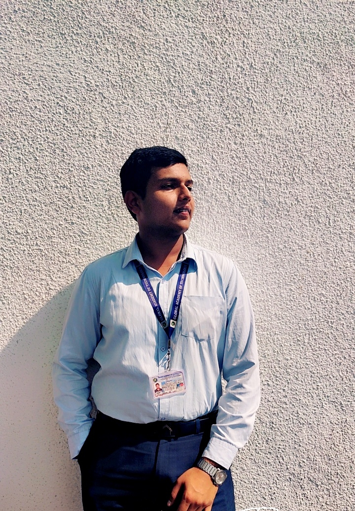

Hi I am
Syed Faraz Ali
Intern, entrepreneur, singer
Thanks for your interest, here
is a quick story of me and this
website.Syed Faraz Ali, a KLian who is working as an intern and
loves to solve programming problems
in most efficient ways. Apart from
this I like to Travel and unleash the never visited places
by the people or the places which I have never been
yet.
I am a passionate food enthusiast with an insatiable love
for exploring different flavors and culinary experiences.
Food has always been my source of joy and inspiration.
I believe that every meal is an opportunity to indulge in
delightful tastes, embrace diverse cuisines, and create
memorable moments around the dining table.
From savoring mouthwatering fried prawns of Saudi Arabia,UAE
to relishing aromatic curries in India, my taste buds have
been delighted by a myriad of culinary delights.
However, there are a few dishes that hold a special place in my heart:
a perfectly cooked Chicken Briyani, and with saucy seekh kebab
straight from a wood-fired oven, and a crispy fried
golden fish with mayo
